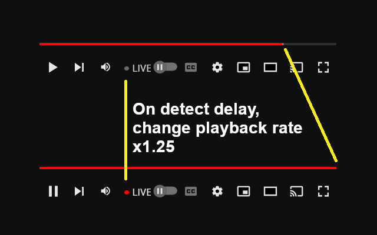

Subscription Feed Filter for YouTube
GitHub
Subscription Feed Filter for YouTube
GitHub


Filters such as Live, Streamed, Video, and Keyword search can be added to Subscriptions, Playlists, and other YouTube pages.
Provides a filter like YouTube home screen on pages such as subscriptions and libraries.
Filters: Live, Streamed, Video, Shorts, Scheduled, Notification on, Notification off, Unwatched, Watched
Keyword search: It can be combined with other filters.
 YouTube Live Stream Latency Mitigator
GitHub
YouTube Live Stream Latency Mitigator
GitHub


This extension syncs YouTube live streams in real-time by accelerating viewer-delayed streams caused by data reception delays.
A DVR-enabled YouTube live stream will experience delays between the broadcaster's delivery time and the viewer's time if there is a delay in receiving data at the viewer's client. This extension temporarily speeds up delayed YouTube live streams to keep the live stream real-time.
Enabling active mode will reduce latency for all live broadcasts, regardless of whether DVR is enabled or disabled. However, since this feature consumes the buffer as much as possible, so live streams may frequently pause.
 Auto Pan by Window Position
GitHub
Auto Pan by Window Position
GitHub


This extension controls audio panning, enabling sound to be heard from the left when the window is positioned to the left of the display's center and from the right when it's on the right side.
It may not function on sites with CORS configured.
 Improve YouTube Live Chat
GitHub
Improve YouTube Live Chat
GitHub
This extension provides the following features to improve YouTube live chat:
- Displays each message in a single line. This ensures that even long messages spanning multiple lines take up uniform space. Hovering over a message will display its full content as usual.
- Hides icons, names, and badges from messages.
- Differentiates message text and background colors based on user type: general users, members, moderators, and owners.
 YouTube Volume Control
GitHub
YouTube Volume Control
GitHub

This extension adds a button to YouTube videos that allows you to change the volume with touch operations.
 YouTube Playback Quality Control
GitHub
YouTube Playback Quality Control
GitHub

This extension adds a button to YouTube videos that allows you to change the playback quality with touch operations.
YouTube Playback Rate Control GitHub
This extension adds a button to YouTube videos that allows you to change the playback rate with touch operations.

Seek to Timecode Control for YouTube GitHub
An extension that allows you to seek to any time by clicking the current time on a YouTube video and entering a timecode
This extension allows you to edit the current time of YouTube videos, enabling you to seek to specific timecodes by inputting them.
 YouTube Thumbnail Button
GitHub
YouTube Thumbnail Button
GitHub

This extension adds a button to YouTube videos that allows you to open the thumbnail with touch operations.